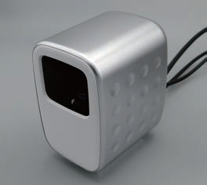

可視・赤外同軸カメラ

長波長赤外は波長が10 μm程度の電磁波で、対象物の表面温度を計測するサーモグラフィに利用されている。物体の撮影に一般的に用いられる可視光とは波長が10倍以上異なるため、長波長カメラにより可視カメラでは得られない情報を含んでいる。例えば、可視光でガラスを撮影すると奥の物体が写るが、長波長赤外で撮影するとガラスの奥の物は写らないため、可視画像と長波長赤外画像の組み合わせによりガラスを検出することができる。このように、可視画像と長波長赤外画では物体の写り方が大きく異なる場合があるため、二種類のカメラを並置して撮影すると対応点の推定が困難な場合がある。そのため、同一の光軸で撮影できる同軸カメラを利用することが有効である。我々は可視画像と長波長赤外画像を同じ視点から撮影できるコンパクトな同軸カメラを実現した。
Publications
- 高畑智之, 原田達也, “可視・長波長赤外同軸カメラを利用したガラス検出,” 第40回日本ロボット学会学術講演会 (RSJ2022), 2B1-03, 2022
- 高畑智之, 原田達也, “移動ロボットにおける物体認識のための可視光・遠赤外光同軸撮影システム,” 第37回日本ロボット学会学術講演会 (RSJ2019), 1L1-01, 2019.